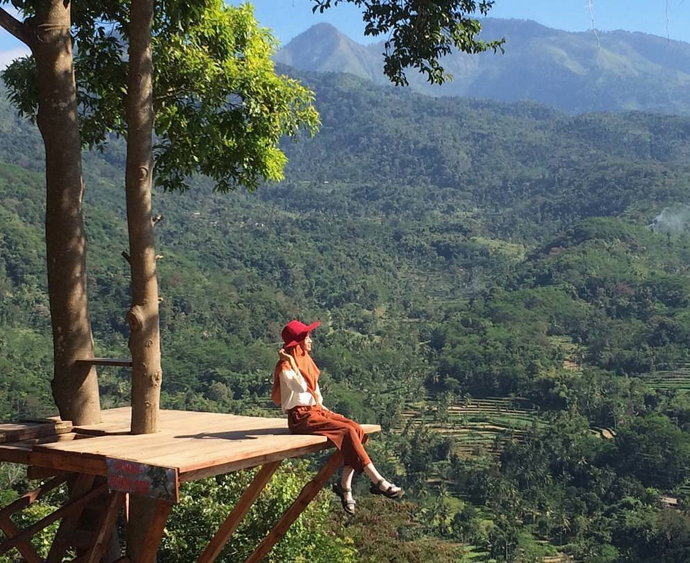
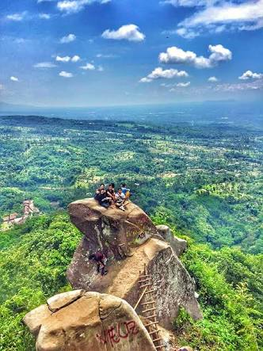
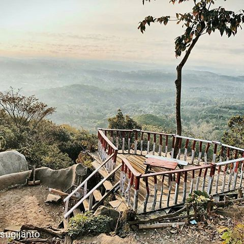

Bukit
SJ88
Nama SJ 88 ini ternyata merupakan singkatan loh. S dari kata Sucopangepok (nama dari desa tersebut), J untuk kata Jelbuk (nama kecamatan) dan 88 karena letaknya di 880 MDPL (meter di atas permukaan laut), namun ada juga yang bilang 88 ini di ambil karena ada salah satu batu yang berbentuk angka 8.
Untuk mencapai spot paling atas, dan menemukan batu-batu nan elok, arek lokal harus mendaki sekitar 30 menit saja. Sesampainya disana, nikmati suguhan nuansa layaknya mendaki gunung karena track nya yang menanjak. Tapi tenang saja, sudah disediakan tempat-tempat untuk beristirahat, sekedar minum, dan menghela nafas sebelum lanjut tracking ke puncak. Jangan lupa bawa persediaan air mineral yang cukup yaUntuk mencapai spot paling atas, dan menemukan batu-batu nan elok, arek lokal harus mendaki sekitar 30 menit saja. Sesampainya disana, nikmati suguhan nuansa layaknya mendaki gunung karena track nya yang menanjak. Tapi tenang saja, sudah disediakan tempat-tempat untuk beristirahat, sekedar minum, dan menghela nafas sebelum lanjut tracking ke puncak. Jangan lupa bawa persediaan air mineral yang cukup ya.
Puncak SJ 88 menawarkan pesona yang tidak biasa. Dari atas sini, kamu bisa meilhat kota Jember dari kejauhan dengan suasana yang berbeda. Semilir angin nan sejuk khas cuaca dataran tinggi akan membuat terlarut. Apalagi pemandangan saat matahari terbit, pantas saja bukit ini juga terkenal dengan nama bukit mentari. Nah, kalau beruntung, arek lokal bisa menikmati pemandangan yang tertutup kabut layaknya bukit di atas awan. Ga bakal menyesal deh mendaki jauh-jauh.
